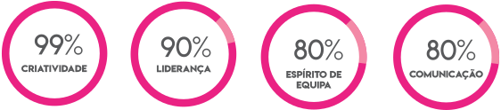
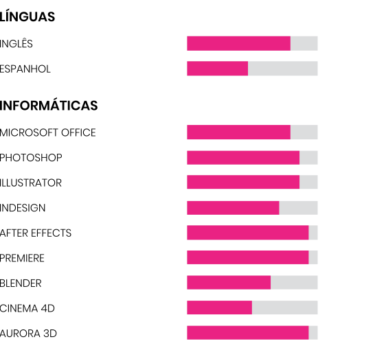

Sobre Mim
Formação
Aptidões

Competências

Diversos
Criador de Conteúdos TVS Canal
Alto do Moinho 2016;
Apresentador do programa de entretenimento online “PurAnimação”;
Designer da Entidade Gráfica da empresa de animação de eventos “Big Dreams”2015;
Fotógrafo (regime autodidata);
Videógrafo e Video Designer (freelancer);
Gravação e Edição dos Espectáculos da Escola de Dança “Vivadança” 2017 & 2018, e do colégio “Atrium7” 2018;
Blogger.
Conclusão
Mais texto